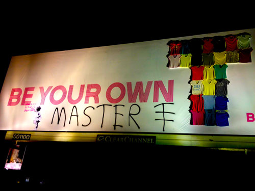

Banksy

Banksy is a pseudonymous England-based graffiti artist, political activist, film director, and painter.
His satirical street art and subversive epigrams combine dark humor with graffiti done in a distinctive stenciling technique. Such artistic works of political and social commentary have been featured on streets, walls, and bridges of cities throughout the world.
Banksy's work was made up of the Bristol underground scene which involved collaborations between artists and musicians. According to author and graphic designer Tristan Manco and the book Home Sweet Home, Banksy "was born in 1974 and raised in Bristol, England. The son of a photocopier technician, he trained as a butcher but became involved in graffiti during the great Bristol aerosol boom of the late 1980s. Observers have noted that his style is similar to Blek le Rat who began to work with stencils in 1981 in Paris and Jef Aerosol who sprayed his first street stencil in 1982 in Tours (France), and members of the anarcho-punk band Crass, which maintained a graffiti stencil campaign on the London Tube System in the late 1970s and early 1980s. However Banksy claims that he based his work on that of 3D from Massive Attack, stating, "No, I copied 3D from Massive Attack. He can actually draw."
Known for his contempt for the government in labelling graffiti as vandalism, Banksy displays his art on public surfaces such as walls, even going as far as to build physical prop pieces. Banksy does not sell photos of street graffiti directly himself; however, art auctioneers have been known to attempt to sell his street art on location and leave the problem of its removal in the hands of the winning bidder. Banksy's first film, Exit Through the Gift Shop, billed as "the world's first street art disaster movie," made its debut at the 2010 Sundance Film Festival. The film was released in the UK on 5 March 2010. In January 2011, he was nominated for the Academy Award for Best Documentary for the film.